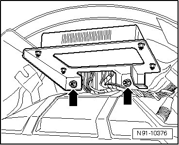
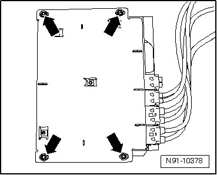
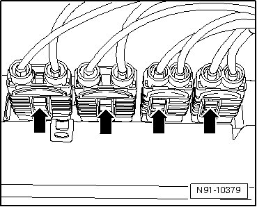

Digital TV Tuner
Digital TV Tuner
The digital TV tuner is installed in the spare wheel well.
Removing
Before starting repair work, perform the following:
- Switch off ignition, switch off all electrical consumers and remove ignition key.
- Open cover over spare wheel.
- Remove two bolts - arrows - on bracket.

- Remove bracket and remove four bolts - arrows - on digital TV tuner.

- Disconnect harness connectors of antenna wires by release locking mechanisms - arrows - remove harness connectors.

- Mark connector positions and individual antenna connectors so that they can be reconnected in the same positions when installing.
- Disconnect voltage supply connector on digital TV tuner and remove tuner.
Installing
- Connect harness connectors of antenna wires and voltage supply onto digital TV tuner.
- Install digital TV tuner securely on bracket.
- Before reinstalling bracket with digital TV tuner in spare wheel well, the remote control must be programmed. Refer to --> [ Remote Control for Digital TV Tuner, Adapting ] Testing and Inspection.
- Install bracket with digital TV tuner in spare wheel well.
- Update stations. Refer to --> Operating instructions.